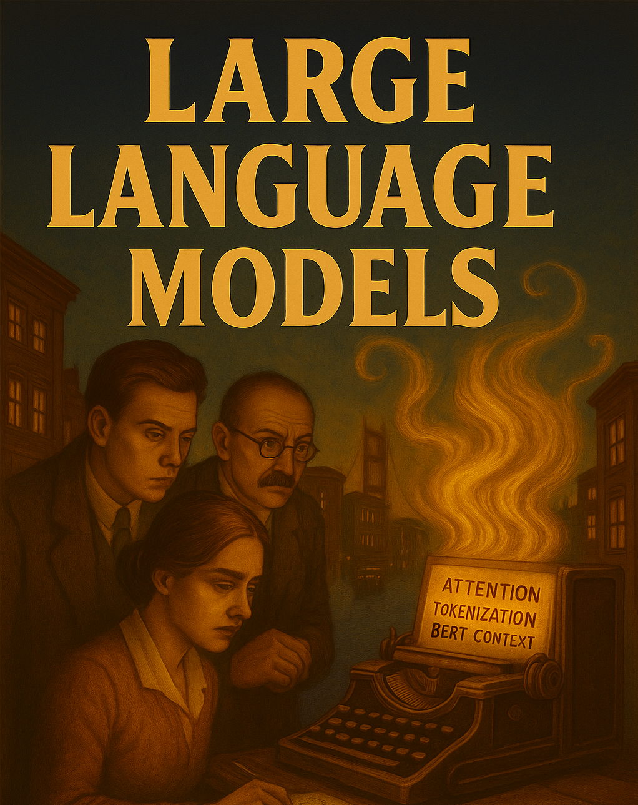

Week 1 — LLMs, Models & Harnesses + Setup
The model landscape and getting your two harnesses working
Week 1 — LLMs, Models & Harnesses
The model landscape, what a harness is, and getting Claude Code + VS Code/Copilot working

This is the opening week of the course — the one front-facing, lecture-heavier session. By the end you understand the model landscape (including open-weights models), what a harness is and why it matters, and you have both course harnesses working on your machine.
Before you come to class (30–60 min)
✅ Pre-class checklist
That’s enough. We finish setup together in class.
Learning objectives
By the end of this unit you will be able to:
- Explain what an LLM is, what a context window is, and why both matter for data work.
- Distinguish closed/frontier models from open-weights models and say when each is the right choice.
- Explain what a harness is and why it matters as much as the model.
- Run an identical small task across Claude Code (terminal + desktop) and VS Code + Copilot, and articulate the differences.
Session shape (200 min · 50·50·40·40·20)
| Chunk | Focus | Mode |
|---|---|---|
| 1 (50) | LLMs & the model landscape | Talk |
| 2 (50) | Harnesses, open-code, open-weights | Talk |
| 3 (40) | Hands-on: Claude Code (terminal + desktop) | Individual |
| 4 (40) | Hands-on: VS Code + Copilot + the comparison | Individual |
| Discussion (20) | Surfaces, trust, the jagged frontier | Group |
Chunk 1 — LLMs & the model landscape (50 min · talk)
📊 Core LLM concepts
Slideshow: LLM Concepts and Applications
- What an LLM is — a statistical model predicting the next token from massive training data.
- The transformer revolution — how 2017’s “Attention is All You Need” made today’s models possible.
- Context windows — what they are and why they shape every data-analysis workflow.
- Training & feedback — pre-training, resources, and human feedback (RLHF); why models differ.
- The jagged frontier — where LLMs excel and where they quietly fail. See Mollick on the shape of AI jaggedness.
- Cyborg vs Centaur — two ways to split work with AI (Mollick): the Centaur hands off whole sub-tasks; the Cyborg interleaves human and AI move-by-move. You’ll feel both this term.
The model landscape (see Which AI model):
- Frontier closed models — Claude, GPT, Gemini. State of the art, rented per token.
- Open-weights models — Llama, Qwen, Mistral, DeepSeek, Kimi. Download and run yourself; roughly SOTA-minus-a-few-months. Why they matter: privacy, cost at scale, reproducibility. Full orientation in Open-weights & local models.
Chunk 2 — Harnesses, open-code & open-weights (50 min · talk)
🔧 The model is the engine; the harness is the car
A harness wraps a model and lets it actually do things — read your files, run code, edit files, iterate. The harness matters as much as the model.
This course uses exactly two harnesses:
| Harness | Surfaces | Notes |
|---|---|---|
| Claude Code | Terminal and desktop app | Terminal-native agent that sees your project, runs code, iterates. |
| VS Code + GitHub Copilot | IDE | In-editor assistance; you can point it at different backing models. |
That’s it — no other tools to learn. Everything transfers conceptually to alternatives.
Two awareness topics (not required to install):
- Open-code tools — open-source agentic harnesses you run yourself and point at any model.
- Open-weights / local models — running a private, frozen model locally (e.g. via Ollama), and pointing a harness at it.
IDE assistance vs terminal-native execution — the jump this course makes is not “AI vs no AI.” It’s about where the AI runs and how tight the loop is. Copilot keeps you in the editor; a CLI agent compresses the ask→run→inspect→fix loop into one place.
Chunk 3 — Hands-on: Claude Code (40 min · individual)
🖥️ Same task, two surfaces — terminal then desktop
- Install & authenticate Claude Code in the terminal (finish Installing AI CLI Tools if needed). Open a terminal, make a folder, and launch:
mkdir my-first-agent && cd my-first-agent
claude- A first real task. Try a tiny data-search prompt and verify the result against reality:
Get me an income dataset by planning region (county) in Connecticut for 2023.
Present the results as a table I can copy and edit.Then find the actual data and compare. Try it more than once; tweak the prompt to be more specific.
- Now do the same thing in the Claude desktop app. Notice what changes between terminal and desktop: file access, permissions, how you see the work.
Chunk 4 — Hands-on: VS Code + Copilot + the comparison (40 min · individual)
🧩 The IDE harness
- Set up VS Code + Copilot (guide). Open Copilot Chat (
Ctrl+Shift+I/Cmd+Shift+I) and run the same Connecticut data task. Then switch the backing model in Copilot (e.g. a GPT model vs a Claude model) and rerun — notice whether the answer or the workflow changes.
🎯 The task: one small analysis, three surfaces
Don’t just look up data — make something. Pick one small, checkable analysis and run it on all three surfaces (Claude Code terminal, Claude desktop, VS Code + Copilot):
“Get Connecticut median household income by county for 2023, load it into a dataframe, and make one labelled bar chart sorted high to low. Save the chart as a PNG.”
For each surface, note:
- Did it actually run the code and produce the PNG, or just hand you a snippet?
- Was the data right? Open the numbers and compare to the Census/ACS source. Flag anything invented.
- How many turns did it take to get a correct chart?
Fill in a tiny comparison table — this is the raw material for your delivery note:
| Surface | Ran the code? | Data correct? | Turns to a good chart | Felt best for… |
|---|---|---|---|---|
| Claude Code (terminal) | ||||
| Claude desktop | ||||
| VS Code + Copilot |
🦙 Stretch (optional) — run a model locally
Read Open-weights & local models. If you’re curious, install Ollama, pull a small model (e.g. ollama run llama3.2), and run a tiny task locally. Reflect on the privacy/cost/capability trade-off versus the frontier models you used above.
Discussion (20 min)
- Terminal vs desktop vs IDE — which felt right for which kind of task?
- Closed vs open-weights — when would privacy or cost push you to a local model?
- The jagged frontier — what did the AI nail, and where did it quietly get the Connecticut data wrong? How did you catch it?
- Switching the backing model in Copilot — did it change the answer, the style, or nothing you could see?
Delivery
📦 What to hand in (Sunday 23:55)
- Working environment — evidence that Claude Code (terminal + desktop) and VS Code + Copilot all run (a screenshot of each completing the Connecticut task is fine).
- A short note (½ page): which setup you’ll use for the rest of the course and why; one thing the AI got wrong on the Connecticut task and how you caught it.
Academic integrity & AI use
- AI as assistant — use AI to enhance your capabilities, not replace your thinking.
- Maintain authority — you remain responsible for all outputs and interpretations.
- Verify everything — always validate AI suggestions, especially statistical claims.
- Document usage — keep track of how AI helped, to learn and for transparency.
Red lines: never submit unverified AI output as your own; always understand the analysis you present; don’t outsource critical thinking.
Knowledge Base
Further reading (optional)
- Ethan Mollick, Co-Intelligence: Living and Working with AI — Chapters 1–2 for the Cyborg/Centaur framing.
- Mollick — The shape of AI jaggedness.
- Attention Is All You Need (2017) — the transformer paper, if you’re curious about the engine.